Vaginal Discharge
- Estrogen drives normal discharge. Estrogen → glycogen in the vaginal mucosa → lactobacilli metabolize it → low pH → protection against pathogens. No estrogen (prepubertal, postmenopausal) means no glycogen, a higher pH, and more infections.
- Discharge changes across the cycle and that is normal. Dry just after the period → white and creamy as estrogen rises → clear, stretchy "egg-white" mucus (Spinnbarkeit) at ovulation → thick and scant in the luteal phase under progesterone.
- Colour alone does not make the diagnosis. Not all white discharge is yeast, and healthy discharge can be white or yellowish. Use the history + exam + pH + whiff + wet mount.
- Four bedside tests: pH (normal <4.5) · whiff/amine test (KOH → fishy = BV) · saline wet mount (clue cells, trichomonads) · KOH wet mount (yeast).
- The big three infections: BV (fishy, grey, thin, pH >4.5, clue cells — not an STI) · candida (itchy, cottage-cheese, pH normal, pseudohyphae) · trichomonas (frothy yellow-green, pH >4.5, motile trichomonads — is an STI). Add atrophic vaginitis after menopause.
- Take the symptom seriously. Watery discharge can be the presenting complaint of cervical cancer. Always look at the cervix.
Learning Objectives
- Describe the changes in vaginal discharge over the menstrual cycle.
- Describe the assessment of vaginal discharge.
Dr. Laura Sovran's 25-minute module. The lecture itself is short and deliberately sends you to a self-study table covering BV, candidiasis, trichomoniasis and atrophic vaginitis — that table is reproduced in full further down. The cycle underneath all of this is in 3.3.
Normal Discharge
Why estrogen makes discharge, and how it changes across the month.
The Estrogen–Glycogen–Lactobacillus–pH Chain
This chain only runs when estrogen is present — that is, during the reproductive years. Before puberty and after menopause there is little estrogen, so little glycogen, fewer lactobacilli, a higher pH, and a thin fragile mucosa. That is exactly why postmenopausal women get atrophic vaginitis and recurrent urinary tract infections.
Heads up: the auto-transcript of this lecture garbles this passage badly — it says the estrogen effect happens "in the menopausal phase" and that premenopausal women don't have much estrogen, which is backwards. The slide and the rest of the talk make the direction clear; the version above is the correct one.
High-estrogen states make a lot of discharge. Pregnancy is the obvious one. Some patients are genuinely bothered by the volume of normal physiologic discharge — once you have ruled out BV, trichomoniasis and recurrent yeast, and you have looked at the cervix, reassurance is the treatment.
Discharge Across the Cycle
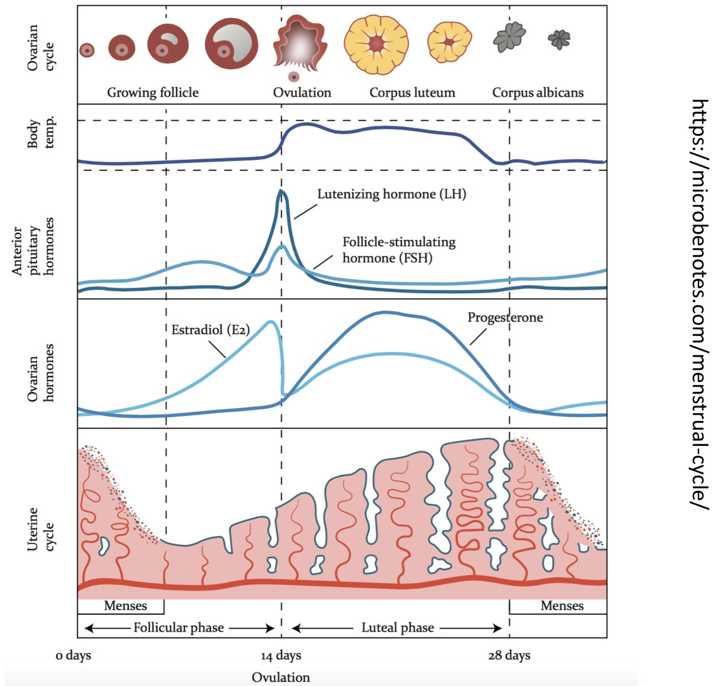
The cycle you already know from 3.3: growing follicles, ovulation, corpus luteum, and the estradiol and progesterone curves that drive everything below.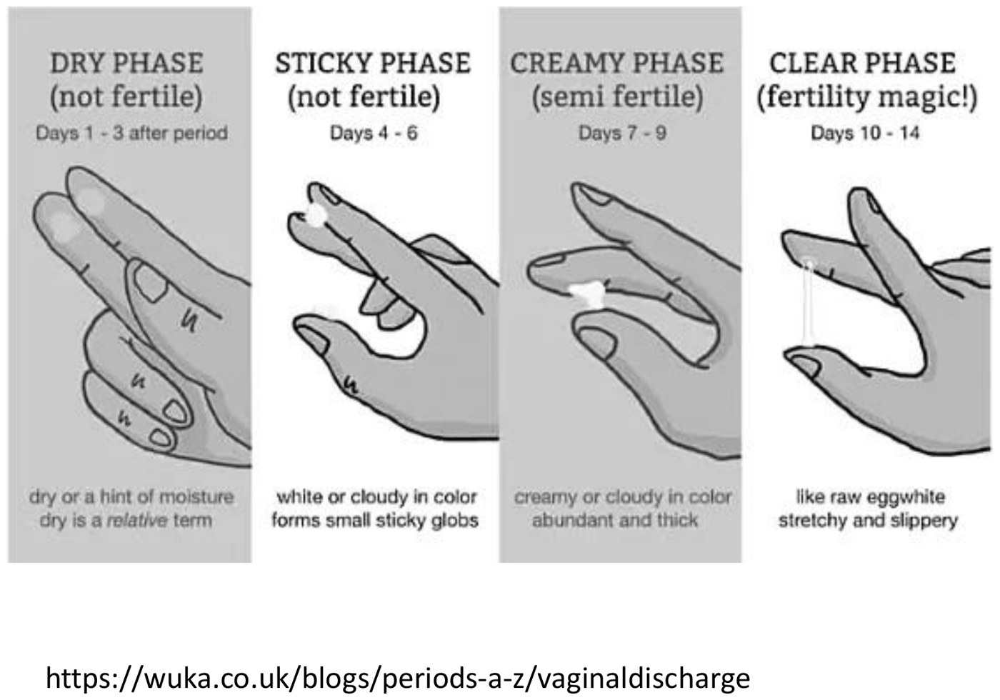
The same month, seen from the patient's side.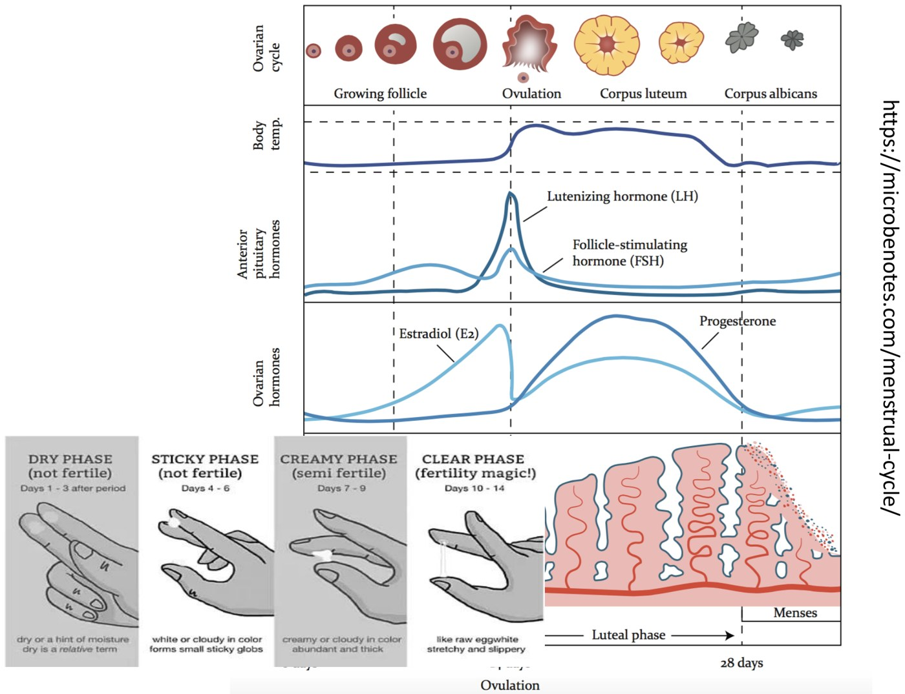
| Phase | Hormone | Discharge |
|---|---|---|
| Just after the period | Estradiol at its lowest | Dry phase — relatively little discharge |
| Follicular (roughly days 1–13) | Estrogen rising | Increasing white, creamy discharge — normal |
| Ovulation (~days 10–14 of a 28-day cycle) | Estrogen peaks | Clear, stretchy, "egg-white" mucus — SpinnbarkeitThe stretchiness of cervical mucus. At ovulation it can be drawn out several centimetres between two fingers without breaking.. It stretches a long way |
| Luteal | Progesterone dominant | Thickened cervical mucus and discharge; some describe it as slightly yellowish |
This is the physiology behind fertility awareness / natural family planning. Stretchy egg-white mucus means the fertile window — so it is the worst time to have unprotected intercourse if you are avoiding pregnancy, and the best time if you are trying. See 4.3 for how well that actually works as a method.
Colour Is a Clue, Not a Diagnosis
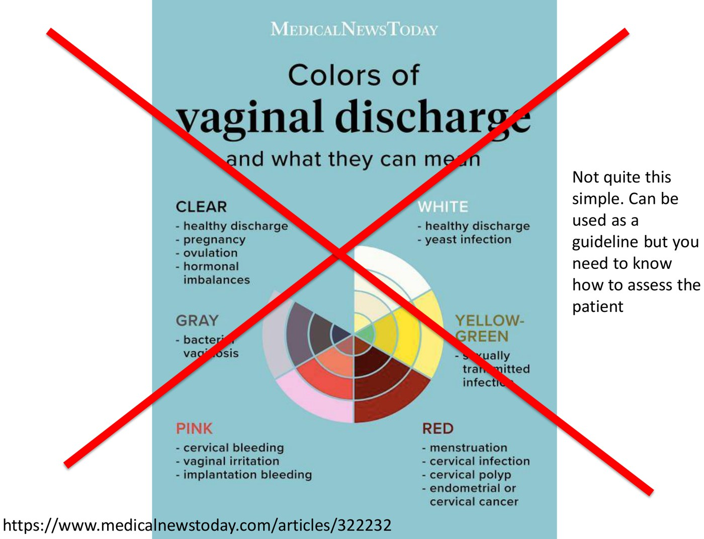
- White discharge is not automatically yeast. Plenty of healthy discharge is white.
- Even classic "grey" BV discharge rarely looks convincingly grey. What is more telling is how it coats the vaginal walls — thinly and evenly, adherent all the way round.
- Watery discharge deserves a good look at the cervix. Cervical cancer can present this way.
Assessment
History, examination, and the four bedside tests.
The Structure
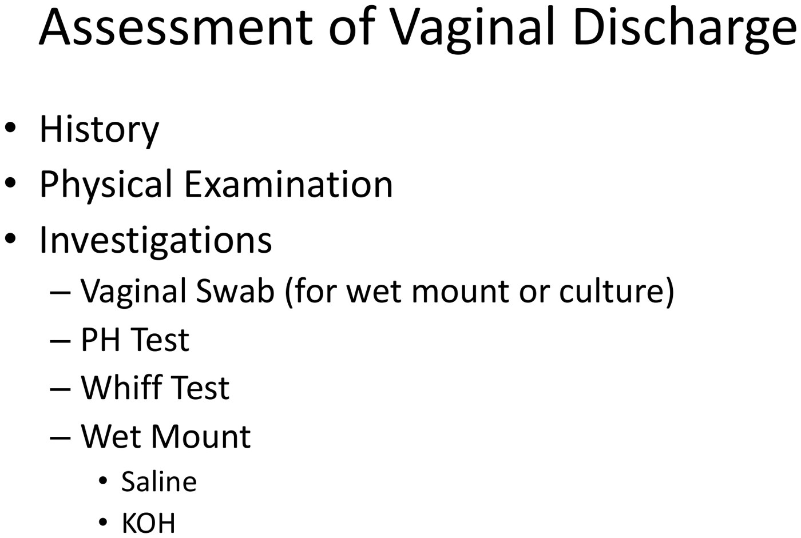
In a family medicine office you will probably only do a vaginal swab, and the lecturer is explicit that this is perfectly fine. If you have looked at the vulva, the vagina and the cervix, inspected the discharge, and taken a swab, you have done your job. The pH strip, whiff test and wet mount are here so you understand the descriptions in the lab report and in the table below — and because some offices do have a microscope.
History
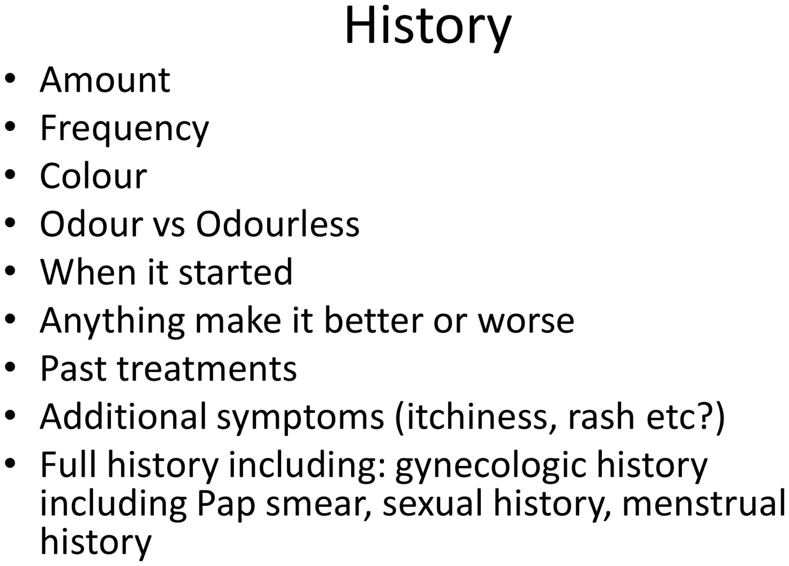
| Ask | Why |
|---|---|
| Amount, frequency, colour | Establishes what "abnormal" means for her |
| Odour vs odourless | A fishy odour points hard at BV (or trichomonas) |
| When it started; better or worse with anything | Cyclical → likely physiologic. After a new partner → think BV or STI |
| What has she tried, and how did she use it? | Half-finished OTC azoles are common. "How did you use it" matters — people do get this wrong |
| Douching, "potions and lotions" | Douching is a risk factor for BV; topical products cause contact dermatitis |
| Itch, rash, other symptoms | Itch pushes you toward candida or a dermatologic cause |
| Recent antibiotics, diabetes, pregnancy, immunosuppression | All risk factors for yeast. Pregnancy is a mildly immunosuppressed state |
The lecturer's framing is worth stealing: every question you ask is simultaneously gathering risk factors and building the clinical picture, not just filling in a form.
Physical Examination
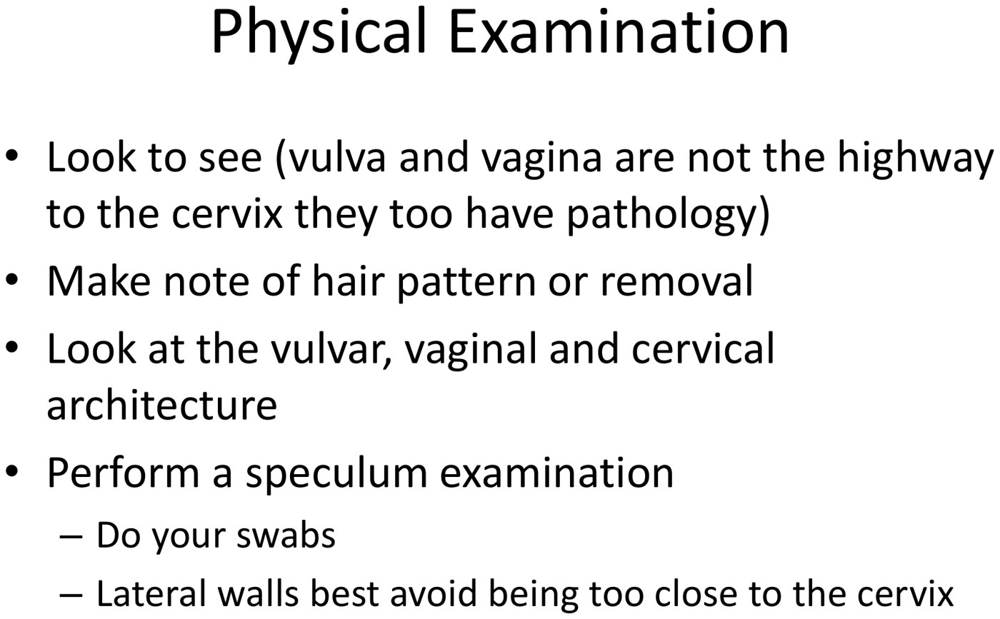
- Vulva: architecture, lesions, hair pattern or removal. Shaving causes folliculitis and ingrown hairs, which itch — and broken hairs suggest scratching.
- Vagina: is it wet or dry? Are there lesions, masses, ulcerations? Does the mucosa bleed or look friable when you open the speculum?
- Cervix: what does the surface look like? Is there mucopurulent discharge from the os (cervicitis)? Is there anything that worries you about cancer?
- Discharge: where is it, what does it coat, how does it behave?
"You can just quickly do a speculum examination, but that's the wrong approach. You actually have to look and see and appreciate what you're looking at." The more deliberately you do it, the more you pick up.
Swabs: Where You Take Them Matters
| Swab | Taken from | Why there |
|---|---|---|
| Chlamydia & gonorrhea (if cervicitis is suspected) | The cervix, within the cervical os | That is where the organisms live (see 4.6) |
| Vaginal swab (wet mount / culture) | The lateral vaginal walls | Away from the cervix |
| pH sample | Lateral walls, not near the cervix | Blood has a pH of 7 and even invisible blood near the cervix will falsely raise your reading |
pH and the Whiff Test
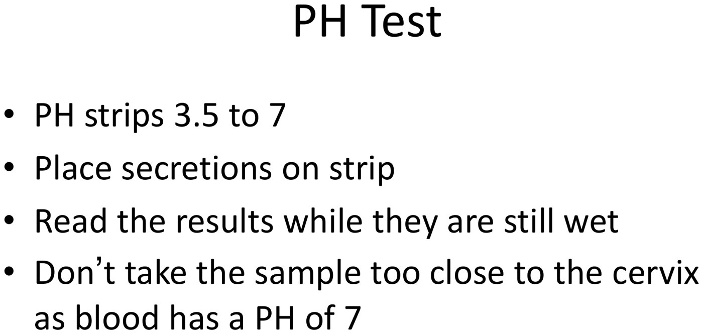
pH strips 3.5–7. Place the secretions on the strip and read while still wet.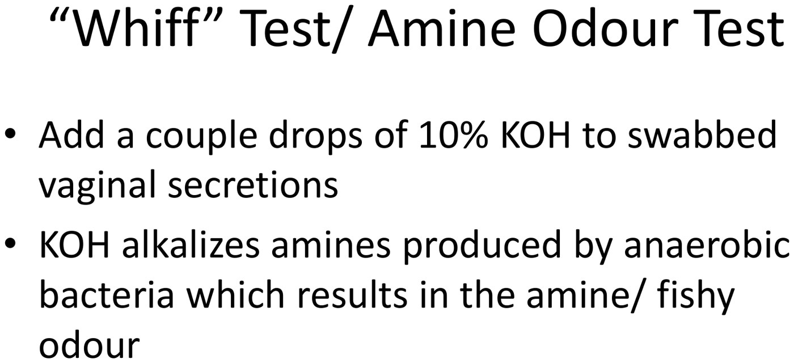
Whiff test. A couple of drops of 10% KOH on the secretions.Why the whiff test works: KOH alkalizes the amines produced by the anaerobic bacteria that overgrow in BV, releasing them as a gas. The result is the fishy odour. A positive whiff test is one of the Amsel criteria. The lecturer's description of a strongly positive test — that it will take your breath away — is not an exaggeration.
The Wet Mount
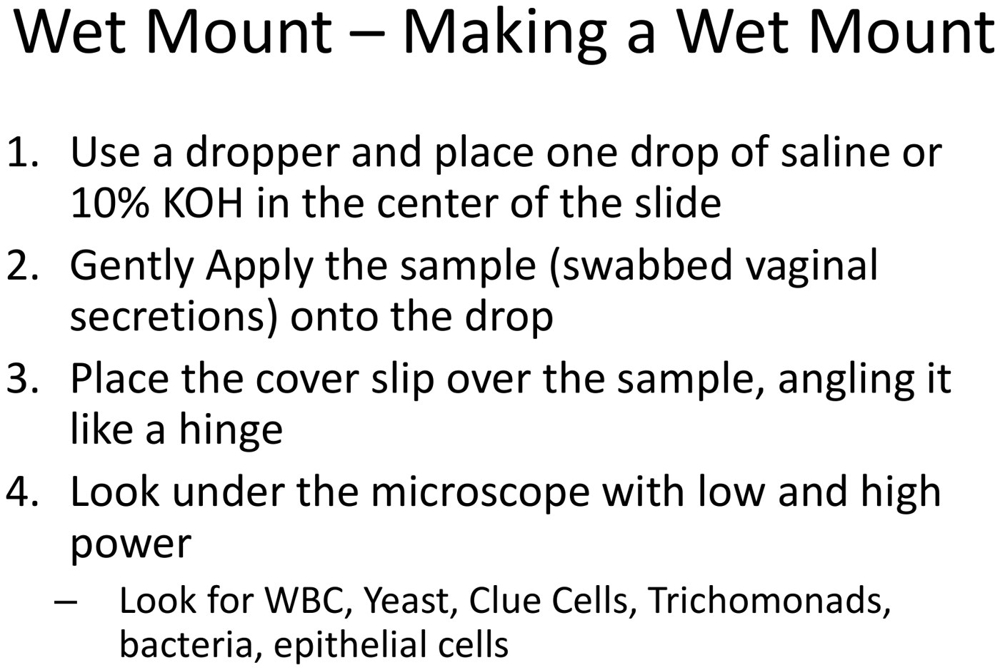
What you are hunting for: white blood cells, yeast, trichomonads, bacteria and epithelial cells. Use both low and high power.
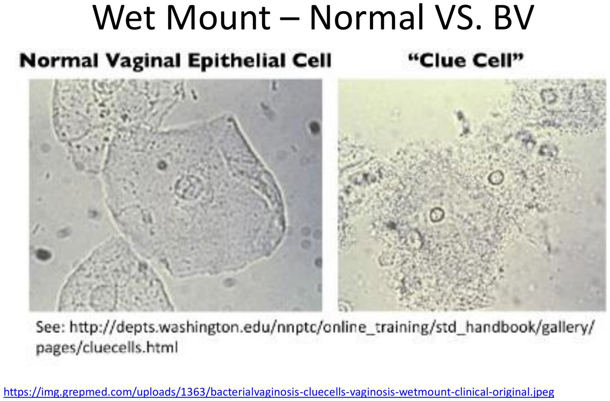
Clue cells (BV). An epithelial cell so coated in adherent bacteria that its borders disappear — the classic description is a cell "rolled in sand."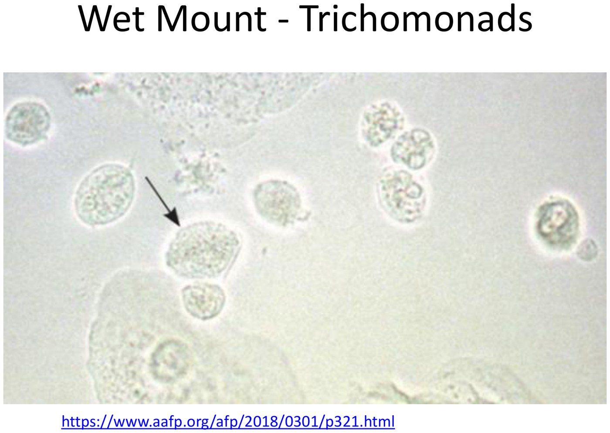
Trichomonads. Look for the tail and, critically, motility. Leave the slide more than 10–15 minutes and they stop moving, and you will miss them.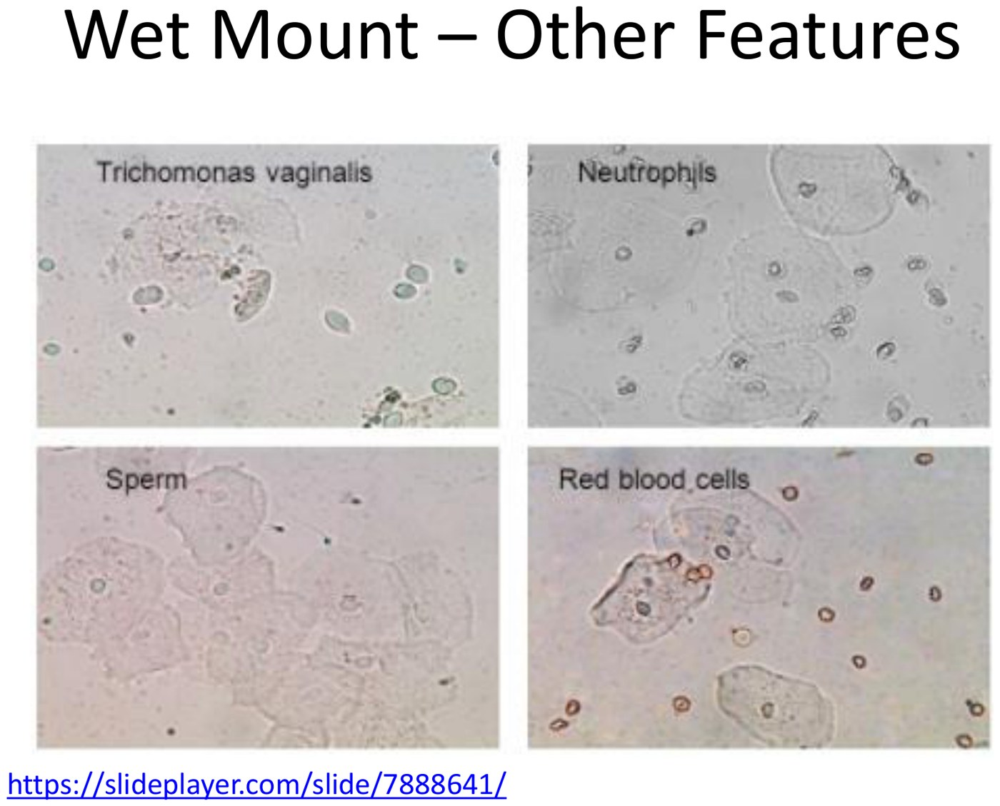
Everything else. Size is your guide: RBCs small with no nucleus · WBCs a bit bigger, with nuclei · epithelial cells much larger. Sperm are often on the slide too.Reading a wet mount takes practice. Background artifact can be mistaken for pseudohyphae by a novice, and trichomonads are "really difficult and finicky." Do not over-trust your own early readings.
The Four Causes
The self-study table, which is where most of the examinable detail lives.
Quick Comparison
| BV | Candidiasis | Trichomoniasis | Atrophic | |
|---|---|---|---|---|
| Rank | #1 infectious vaginitis | #2 (75% of women in their lifetime) | #3 | Postmenopausal |
| STI? | No | No | Yes | No |
| Discharge | Grey, thin, thinly coating the walls | "Cottage cheese", adherent white | Profuse, purulent, yellow, malodorous | Scant; dryness |
| Symptom | Fishy odour | Itch, burning, fissuring, "splash" dysuria | Itch, odour | Dyspareunia, postcoital bleeding |
| pH | >4.5 | <4.5 (normal) | >4.5 | Can be >4.5 |
| Whiff | Positive | Negative | Negative | — |
| Microscopy | Clue cells | Budding yeast, pseudohyphae | Motile trichomonads | Parabasal cells, ↑ WBCs |
| First-line | Metronidazole 500 mg PO BID × 7 d | Fluconazole 150 mg PO × 1, or a topical azole × 7 d | Metronidazole 500 mg PO BID × 7 d or 2 g × 1 | Local estrogen |
Bacterial Vaginosis
- It is not an infection with one organism and it is not an STI. It is an alteration of the normal flora to anaerobic predominance — Gardnerella, Mobiluncus, Mycoplasma and others.
- Risk factors: new sexual partner, IUD, sexual activity, douching, smoking, Black ethnicity.
- Culture is not required — and is not useful.
1. pH >4.5 · 2. >20% clue cells · 3. Homogeneous thin white discharge smoothly coating the vaginal walls · 4. Positive KOH whiff test
The gold standard is a Gram stain scored by the Nugent criteria (relative concentrations of lactobacilli versus gram-negative and gram-variable rods and cocci), but Amsel is what you use in clinic.
| Situation | Treatment |
|---|---|
| First episode | Metronidazole 500 mg PO BID × 7 d Alternatives: metronidazole gel 0.75%, 5 g PV daily × 5 d · clindamycin 300 mg BID × 7 d · clindamycin 2% cream 5 g PV qhs × 7 d |
| Recurrent | Metronidazole 500 mg PO BID × 10–14 d, or metronidazole gel daily × 10 d then twice weekly for 3–6 months |
| Pregnancy | Metronidazole 500 mg PO BID × 7 d or clindamycin 300 mg PO BID × 7 d, then test of cure in 1 month. Must be oral — topical will not reduce the pregnancy risks |
- No alcohol with metronidazole.
- In pregnancy, BV raises the risk of preterm labour, PPROM, chorioamnionitis and post-caesarean endometritis. Routine screening is not recommended, though high-risk women may be screened at the first antenatal visit.
- BV also raises the risk of PID, post-abortal PID, post-hysterectomy cuff infection and abnormal Pap results.
- Practical tip from the table: if a swab reports "altered vaginal flora" and the patient is symptomatic, treat it like BV.
Candidiasis
- Symptoms: vulvar pruritus, "cottage cheese" discharge, vulvar burning and fissuring, external "splash" dysuria (it stings as urine passes over inflamed skin — unlike the internal dysuria of a UTI).
- Risk factors: diabetes, pregnancy, antibiotics, immunosuppression.
- On exam: vulvar and labial erythema and edema, satellite pustulopapular lesions, erythematous vagina with adherent white discharge, a normal cervix, and pH <4.5.
- Culture only if it fails therapy. And note: 20% of women have a positive culture and no symptoms — which is why you treat the patient, not the swab.
| Situation | Treatment |
|---|---|
| Symptomatic | OTC azole (miconazole 100 mg PV × 7 d; clotrimazole 1% cream 5 g PV × 7–14 d) or fluconazole 150 mg PO × 1 |
| Recurrent (>4 in 12 months) | Fluconazole 150 mg q72h × 3 doses |
| Maintenance | Fluconazole 150 mg weekly × 6 months |
| Resistant / non-albicans | Boric acid 600 mg PV daily × 2 weeks |
| Pregnancy | Topical azole × 7 d. Boric acid is contraindicated |
- Boric acid is toxic if swallowed. Say so out loud when you prescribe it.
- C. albicans in 90%; others are C. glabrata and C. tropicalis.
- Long-term antifungals can be hepatotoxic, and cross-react with calcium channel blockers, warfarin, oral hypoglycemics and phenytoin.
Trichomoniasis
- A flagellated protozoan, Trichomonas vaginalis. Sexually transmitted — and it survives in hot tubs (up to 24 hours in tap water).
- Discharge: profuse, purulent, yellow, malodorous — the table's phrase is "dripping down the leg." Plus vulvar pruritus.
- pH >4.5, negative whiff test.
- Colpitis macularis ("strawberry cervix") — patchy vaginal erythema with punctate haemorrhages. Classic, but only in a small minority of cases.
- Diagnosis: NAAT is the gold standard. Wet mount is neither sensitive nor specific. Culture on Diamond's media was the pre-molecular gold standard (100% specific, 75–96% sensitive).
- Treatment: metronidazole 500 mg PO BID × 7 d, or 2 g PO × 1. Do not use the vaginal gel — it is not effective enough. Treat partners from the last 6 months.
- Pregnancy: increased risk of PPROM, preterm birth, small for gestational age. Same regimen as non-pregnant.
- Coexists with BV in 60% of cases.
Atrophic Vaginitis
- Who: postmenopausal women, or any hypoestrogenic state.
- Symptoms: dyspareunia, postcoital bleeding.
- On exam: vulvovaginal atrophy, loss of vaginal rugae, friable mucosa.
- Microscopy: predominant parabasal epithelial cells and increased leukocytes; pH can be >4.5.
- It is an inflammatory reaction to atrophy — the estrogen chain at the top of this page, running in reverse.
| Option | Detail |
|---|---|
| Premarin (CEE) cream | 0.5–1 g PV daily × 1–2 weeks, then 0.5–1 g PV twice weekly. Systemic absorption at the start, because the epithelium is thin. No progestin needed |
| Estring | Estradiol 5–10 µg/day, changed every 3 months |
| Vagifem | Estradiol 10 µg PV qhs × 1–2 weeks, then twice weekly |
| Conservative | Vaginal moisturizers and regular sexual activity |
Two things to warn about: local estrogen can cause postmenopausal bleeding (which always needs its own work-up), and atrophic vaginitis often travels with recurrent UTIs.
The Original Table
The self-study document, reproduced above in pieces. Here it is whole — it is a genuinely good reference to keep.
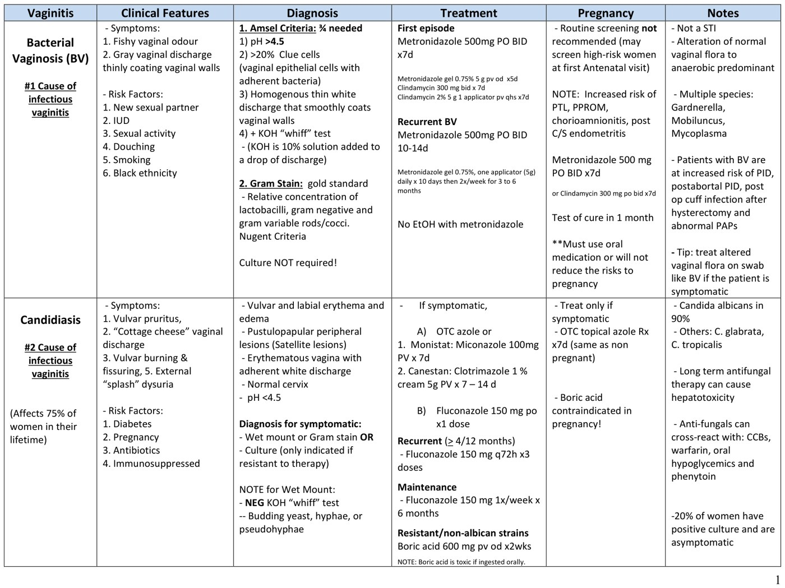
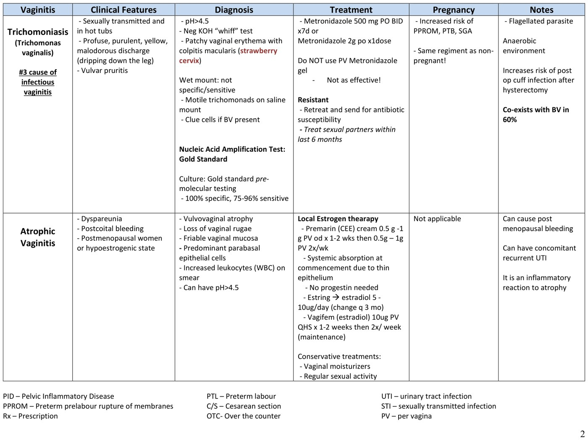
Built from Dr. Laura Sovran's "Vaginal Discharge" module (25 min): the recorded lecture, its slide deck, and the accompanying "Year 2 Vaginitis Table V2" self-study document, which is the source for all the treatment regimens in Part 3. All images are slides or pages from those two files. The auto-transcript of this lecture has heavy caption errors — "Spinnbarkeit" as "spin Baki," KOH as "Kiwis," trichomonads as "chicken gonads," C. glabrata as "Candida collaborator," and one passage that reverses the estrogen–menopause relationship entirely; the slides were used to settle each of those. Related pages: 4.6 Approach to STI for cervicitis and PID, 4.8 for the cervix itself, and 3.3 for the cycle.